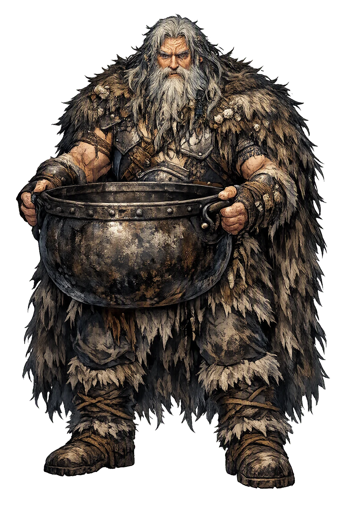
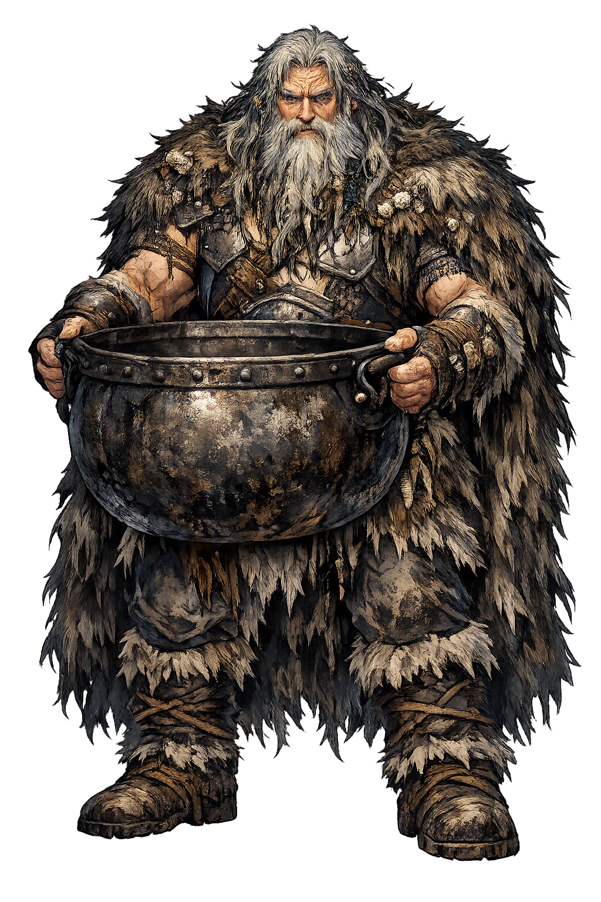

Unicode restoration and ASCII comparison
ᚼᚢᛘᛁᚱ
The name in its original Norse form. Hymir (ᚼᚢᛘᛁᚱ) is attested in the source tradition — “Dark one”. Its original diacritics and script distinctions carry the full phonetic and orthographic weight of the source tradition.
hymir
The plain hymir form is identical to the Unicode restoration. Because this name is already written in Latin letters, no diacritics, stress, or script information were lost — only capitalization differs.
Hymir
The Unicode restoration does not need to recover lost marks for Hymir. Its value is canonical spelling and consistent cataloguing, not the reconstruction of erased orthography. The domain is readable as-is to both DNS and humanity.
Hymir.com → hymir.com
The non-ASCII characters in Hymir are encoded while the ASCII remains visible. To the DNS, it is Punycode. To humanity, it is Hymir.
How Hymir travels from ancient script to the modern URL
Owned, ideal, and ASCII forms of Hymir
Hymir
Restores ᚼᚢᛘᛁᚱ. The full Unicode restoration. hymir.com is not in the PuniCodex collection — it is watched for release; if it drops, this temple upgrades to an owned flagship.
How Hymir was spoken
The Host at Heaven's End, the Ox-Head Bait, and the Cup Broken on a Giant's Skull
Hymir is the sea-giant of Hymiskviða: the fierce host at the eastern edge of heaven whose herd feeds his hall, whose fishing-ground is the cold reach of the Élivágar, and whose treasure is the one thing the gods lack — the mile-deep cauldron in which Ægir could brew ale for all the Æsir at once.
The roomy, hard-forged kettle Týr says his fierce father owns — a mile deep, the only vessel large enough to brew for all the gods.
The head of the black bull Himinbrjótr, torn off by Þórr for bait — the offering that drew the Miðgarðsormr up from the sea-floor.
Hymir's unbreakable drinking-cup, which no pillar could crack — smashed at last on the one thing harder: the giant's own skull.
The giant's byre at heaven's end, where Þórr devoured two of the three oxen at supper and beheaded the finest for the fishing.
Stories of Hymir
Hymir lives in one great poem and its prose retelling: Hymiskviða, the comic and terrible lay of the cauldron-quest, and Gylfaginning 48, where Snorri tells the fishing-trip for the Miðgarðsormr with all its sea-cold detail. It is Þórr's most famous adventure, and the giant is its immovable setting.
The Æsir had hunted and taken auguries from the blood, and saw that Ægir — called also Gymir — had brew-stuff in plenty. Þórr ordered the sea-giant to brew ale for the gods, and Ægir, to be rid of the demand, set an impossible price: first let them bring a cauldron a mile wide. Týr knew where one stood: east of the Élivágar lives the shrewd Hymir at heaven's end, and "my fierce father owns the roomy kettle, a mile deep." So Þórr and Týr drove to the giant's hall. There they met Týr's grandmother, loathsome, with nine hundred heads — and another woman, golden-browed, Týr's mother, who hid the guests under the great cauldron, for her husband was often cruel to visitors.
Hymir came in from the hunting with the ice rattling in his beard. The pillar he looked toward burst apart; eight cauldrons crashed from the broken beam, and one hard-forged kettle came down whole. The guests came out, and the hall fed them: three oxen were slaughtered, and Þórr alone ate two before he slept. In the morning the giant eyed his thinned herd and told his guest they must fish for the next day's meal — Þórr might row out with him, if the little fellow dared the cold and the long pull to his fishing-ground.
Asked for bait, Þórr went to the herd and wrenched the head from the black bull Himinbrjótr — Snorri calls him Himinhrjóðr. Hymir rowed hard, then harder, and still Þórr matched him, past the giant's own grounds into water he said was unsafe, where the serpent lies. Hymir pulled up two whales at once on his hooks; Þórr cast the ox-head overboard. The Miðgarðsormr gaped on the bait, the hook caught, and Þórr braced his feet through the bottom of the boat and hauled the serpent's head to the gunwale — the two glaring, the sea foaming, the boat nearly swamped — until the hammer struck and the serpent sank back into the sea. Hymir rowed home in gloomy silence.
Back on land Hymir demanded proof of strength, and set his crystal cup: break that, and be counted mighty. Twice Þórr hurled it through the stone pillars, and twice it came back to the giant's hand unbroken — until the fair counsellor whispered to strike it on Hymir's own skull, harder than any cup. The cup shattered. Hymir mourned it with the formula of loss: he could no longer say over it "ale is brewed." Then, sullen, he yielded the wager — take the cauldron, if you can carry it out. Týr heaved twice and could not shift it; Þórr hoisted it over his head and strode off with the rim ringing at his heels. They had not gone far before he looked back and saw Hymir coming east from the caves with a troop of many-headed giants; he set down the cauldron, raised Mjöllnir, and slew the whole host. One of Þórr's goats went lame on the road — Loki's doing, the poem says — but the cauldron came to Ægir, who brews ale in it for the Æsir ever after.
Hymir is the Edda's portrait of hospitality under strain: the host who feeds his guests two oxen and counts the cost, who rows farther than he means to because pride will not let him ship his oar first, who wagers his treasures on contests he frames himself — and loses both. The poem never makes him a monster; it makes him a householder with a monstrous ancestry and a mile-deep kettle, and lets the comedy and the cold do the work. What the story measures is not his failure but the difference between keeping plenty and sharing it: the cauldron that brews for all the gods spent its best years in a hall where even a guest's supper was tallied.
Enter Extended Lore